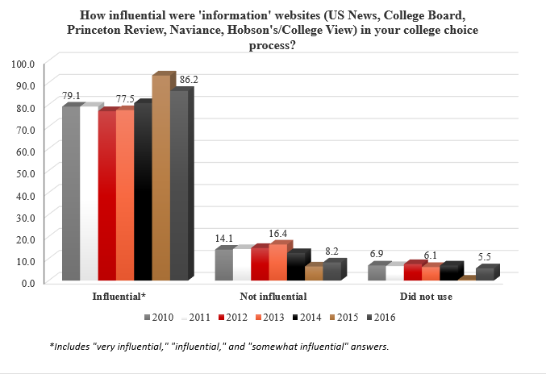
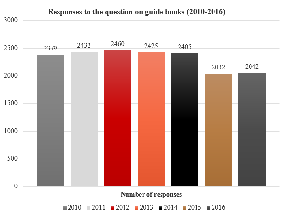

Numbers represent search interest relative to the highest point on the chart for the given region and time. A value of 100 is the peak popularity for the term. A value of 50 means that the term is half as popular. Likewise a score of 0 means the term was less than 1% as popular as the peak.
The large peaks, occuring each fall, represent the full ranking release while the smaller peaks inbetween are indicating the release of supplmentary rankings like 2016's "World's 10 most prestigious universities"
 